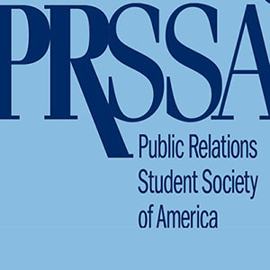

Upcoming Networking Events:
-
Intern Queen Party - Sometime this summer there will be another Intern Queen. Party. It is a awesome networking oppoutunity with representatives from companies like Viacom and Sirius XM. iIt is any Communication major's dream. Last years party was a great sucess with multiple students getting internship oppourtunities. So attend !
-
PRSSA National Conference - Philadelphia - The city is located centrally in the Northeast within near distance of New York City, Washington D.C., Wilmington, DE, rural farms, mountains, beaches and more. Attendees can get to Philadelphia easily by trains, planes, highways and rivers. For these reasons, Philadelphia is the perfect place to host our 2013 Conference with the theme, “Foundation for Innovation.” As the 2013 National Conference host, Drexel University is excited to share how our city, our school and our industry have taught us the value of innovation and the strong foundation necessary for successful growth and development.

Why Should Students Intern
Apply knowledge learned in the classroom. Again, there’s a big difference between learning about strategies and tactics and actually applying them. Interning for an organization helps students learn how their classroom knowledge applies to real situations and reinforces concepts taught in classes.
Gain valuable work experience. In most fields, no longer can a college graduate land an entry-level job with merely a bachelor’s degree and no prior work experience. Internships help students get this real-world experience while still in school. Internship programs are a great way to generate more work samples for your professional portfolio and give you real accomplishment stories for your resume and online profiles.
Decide if this is the right path for you. Working for a company in your industry can give you valuable insight into whether or not the industry is the right choice for you, potentially avoiding the costs of obtaining a degree in a field you’re not interested in. It’s best to know as early as possible, and an internship can help you do that.
Develop and build upon skills. Learning new skills in an internship can help you in future employment opportunities and might give you a leg up on your competition in future application processes.
Get a foot in the door at a company. Internship experiences provide a valuable opportunity to share your skills with a prospective employer long before the hiring process for an entry-level job occurs. This can be a great benefit when, in the future, an opening does occur—if you’ve impressed them, you’ll probably be on the list of top candidates for the job. Also, according to a survey by the National Association of Colleges and Employers (NACE), new graduates who took part in an internship program are more likely to have received a job offer than those who didn’t have an internship experience.
Gain valuable networking contacts. Another benefit to completing an internship is the contacts you make. Networking is often one of the best ways to land a new job and a primary way to learn about unadvertised job opportunities.
Obtain references for future job opportunities. Your internship supervisor has had a chance to see your skills in action at the company and is an ideal reference for future job opportunities. Other individuals you work closely with at your internship can also serve as references or provide recommendation letters for your job search.
Get Linkedin, Get a Job
For many college students and young professionals the world of LinkedIn is a mystery. The most common description is, “Oh, it’s like Facebook for the business world”. Although that may be true LinkedIn has so much more to offer in the realm of networking and job searches than Facebook ever did.
So you’ve chosen a professional picture and uploaded your resume. Now what? Many LinkedIn users do not get past this phase, leaving them with essentially an online version of the resume they already pass out to potential employers. There’s no need for professionals to see what you have already shown them reflected back on a computer screen, so it is time to explore the hidden tools of LinkedIn.
LinkedIn now offers a skills section, where users cannot only choose from a never ending list of positive qualities employers look for in potential candidates, but also various relevant computer programs and language skills. Users can even see what skills are trending in the market place, and therefore can perfect those qualities to make themselves more marketable. What’s more, you can also receive endorsements from friends, colleges and former employers on these skills, giving a profile more validity.
Don’t stop at adding skills to your page. LinkedIn also offers the new feature of linking projects or publications to your page. Do you have a killer portfolio website or have you worked for an impressive online magazine? Add it to your profile to let employers see a sample of your work. Even personal blogs can demonstrate your writing skills and sense of expertise in a subject manner and can easily be added. It is even possible to blog through LinkedIn making it effortless to share with your followers and network.
Now that you have demonstrated your skills and attributes to the LinkedIn community it is time to build a network. It is a no brainer to instantly add people you meet through business fairs, classes and internship or job interviews but it is possible to connect with so many more. Adding a LinkedIn address to a resume or profile is a hot trend in the job market, because employers instantly have access to a resume, which is constantly updated, an endorsed skill set and another means to communicate with you. You can also search for new connections by university or reach out to an employer or intern coordinator through the messenger feature.
Another way to expand your network is to join groups involving many of your organizations. Often you membership in the organization must be verified to enter the group, however, once in you have access to hundreds of other users, many with extensive networks and experience who share a common thread with you and are more than willing to help out.
So take an afternoon and update your profile. Explore these little known tools and use them to your advantage on your next internship or job hunt!